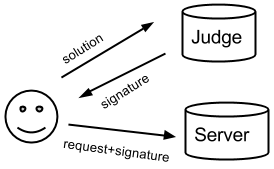

is an anti-spam solution which requires a client to provide a proof of work on their side before you grant a service.
By analogy to snail-mail: we require a user to lick a post stamp and to put it on the envelope, so before you deliver the message, you can verify that the appropriate "payment" (in our case: CPU time) was made.
It is based on a javascript implementation of Hokkaido algorithm, which computes proof of work in the user's broswer, then sends it for verification to a judge, which then sends back signature, which you can later attach to a form, ajax, or other request you need to send from client to your server
This algorithm is memory bound (affected more by memory troughput than CPU speed) which makes it great for javascript -- an attacker might rewrite it in C++ or asembly, gaining just a little speed improvement.
We serve a judge running on our servers for your convinience, but we encourage you to install your own instance.
Following illustration might help understand the process.  A User wants to request a service from your server, such as sending a message to another user. The Server however requires a signature attached to each message -- without such signature a request for service will be refused by Server. Such signatures are provided by Judge, and can not be forged by User, as they are crafted using a secret shared by Judge and Server only. In order to get such signature from the Judge, the User has to perform some work (computations) -- actually it is not the user but his browser, and this whole process does not require a human assistance. These computations are verfied by Judge and only if they are correct, and their ammount is fair enough, the Judge grants the user the signature. So to summarize:
In general you will need:
You need to include stamplicker.js module and configure it providing global object, jsonp implementation, mersenne twister implementation, and sha1 implementation, like this:
var module=StampsLickerModule(window,function(config){
new Request.JSONP({
method:config.method,
url:config.url,
data:config.data,
onFailure:config.failure,
onSuccess:config.success
}).send();
},MersenneTwister,function(text){return CryptoJS.SHA1(text).words[4]>>>0;});
In the above example we use Mootools' JSONP, Sean McCullough's Mersenne Twister and CryptoJS's SHA1, but you should be able to use it with JQuery or Node JS implementations. The global object is used to obtain setTimeout method.
Once you have the module, you can spawn a licker configured for your domain -- some heavy computations are needed once for each domain, and their results are stored internally in this object:
var domain_licker = new module.DomainStampsLicker({
verifier_endpoint:'http://vanisoft.pl:8801/verify', //you can change it to point to your judge if you are running one
domain:'my.website.com', //this should match your account in our service, as judge signatures depend on secret you provided for your domain
//do not change these numbers unless you've read the paper and the source code
n:23, //length in bits of each x, v[i], and w[i], and 2^n is the size of t[]
e:23, //2^e is the expected number of trials before we find checksum with e zeros. e must not be smaller than n
repetitions:6, //number of stamps to be generated. repetitions*2^e is the workload for client. Too minimize variance of the overall workload keep it larger than 5
l:35, //length of the path b[1],..,b[l], and x[0],...,x[l], suggested to be e+10
});
Now you are ready to wire our library to your send button:
$('send').addEvent('click',function(e){
e.preventDefault();
var stamp_licker = domain_licker.getStampLicker('send/from:john/to:marry' + (+new Date()));
stamp_licker.lick({
on_success:function(proof){
$('form1').hidden_ticket = JSON.encode(proof);
$('form1').send();
},
on_failure:function(err){console.log("An error occured",err);}
});
});
Service name provided to getStampLicker(service_name) should be unique -- a proof of work generated will be valid for this particular service_name so unless this is your intention
that the same proof can be used over and over again by an attacker to send multiple messages, you should make sure, that your server will be able to tell if specific service was already granted or not.
One way to achieve this is to store on your server side a "last seen timestamp" for each user and make sure that you never accept a proof for service which contains timestamp older than that.
The above example is a bit simplistic -- it wrongly assumes that clock of user's broswer is in sync with server's clock.
At least it makes sure that a proof of work is valid only for the particular sender (john), and operation (sending to marry) which is always a good idea.
You might want create a more complicated JS to pre-compute the proof of work before user clicks "send" button, so that there is no latency -- just make sure you handle timestamps/uniqueness of service_name correctly
Finally, you should augment your server, so that it verifies the proof attached to the form. The proof contains the following fields:
if(array_key_exists('signature',$_POST) && is_string($_POST['signature'])){
$proof= json_decode($_POST['signature'],false);
if(is_array($proof) &&
array_key_exists('n',$proof) && $poof['n']==23 &&
array_key_exists('e',$proof) && $poof['e']==23 &&
array_key_exists('repetitions',$proof) && $poof['repetitions']==6 &&
array_key_exists('service',$proof) && is_string($proof['service']) &&
is_expected_service_description($poof['service']) &&
was_not_served_before($proof['service'])) &&
array_key_exists('signature',$proof) && $poof['signature']===sha1("{$proof['service']}|{$proof['n']}|{$proof['e']}|{$proof['repetitions']}|{$secret}")){
///...serve...
}
}
}
I am still not sure if shared secret (which requires some additional infrastructure such as domain administrator accounts, admin panel, etc.) is a good way to go. Perhaps an assymetric public key announced by Judge could be used by Server to verify the signature. The drawback is that sha1 is relatively simplier to perform server side in many languages than proper handling of RSA.
You may run Judge on your own servers, which makes a lot of sense since my current hosting is not DoS-tolerant :) You may even skip having a Judge from the whole protocol and embed solution directly in the request sent to the Server and teach the Server how to judge a solution.
press the send button to run example